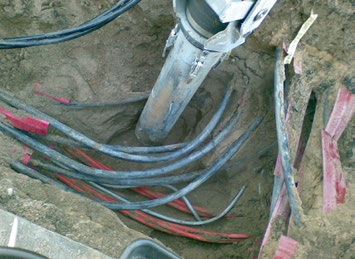
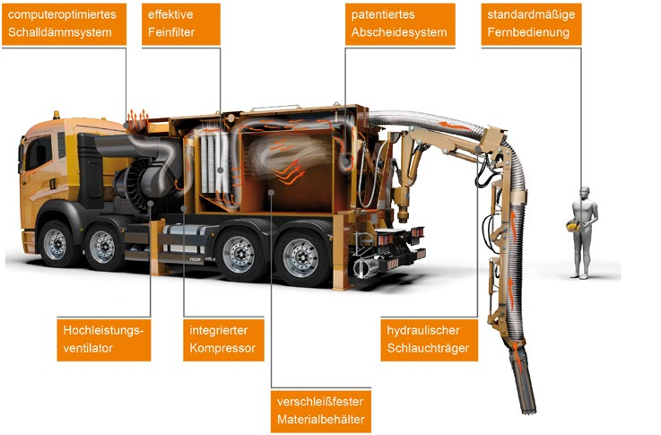
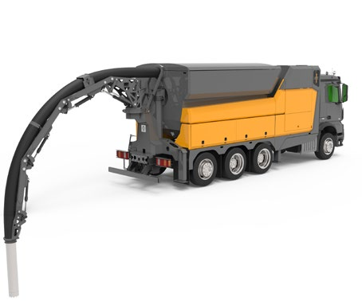
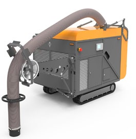

Tiefbauarbeiten werden häufig dadurch erschwert, dass im Arbeitsbereich Leitungen verlegt sind. Von allen Netzbetreibern wird vorgeschrieben, dass ab einem gewissen Abstand zur Leitung nicht mehr mit Baggern gearbeitet werden darf. Um die Leitungen nicht zu beschädigen, schreiben die Auftraggeber der Tiefbauarbeiten meistens Handschachtungen vor. Allerdings zeigt die Erfahrung, dass auch bei Handschachtung erdverlegte Leitungen beschädigt werden. Handschachtungen sind außerdem körperlich anstrengend, teuer und zeitaufwendig.

Abb. 9 Saugrohr im Einsatz
Eine gute Alternative zu Handschachtungen kann der Einsatz von Saugbaggern sein. Mit diesen Geräten kann das Erdreich nach oben abgesaugt und die Leitungen freigelegt werden, ohne sie dabei zu beschädigen.
Saugbagger können überall dort eingesetzt werden, wo beim Einsatz von hydraulischer Aushubtechnik ein hohes Beschädigungsrisiko für Leitungen besteht.
Auch der Platzbedarf kann durch den Einsatz von Saugbaggern verringert werden, da das abgetragene Erdmaterial direkt im Saugbagger gelagert wird.
Funktion eines Saugbaggers
Saugbagger sind vergleichbar mit gigantischen Staubsaugern. Das Gebläse im Saugbagger erzeugt Luftströme von bis zu 32 000 m³/h und einen Unterdruck von bis zu 400 hPa. Der Saugschlauch ist über einen Träger hydraulisch dreidimensional bewegbar. Im Bereich der Saugkrone des Saugstutzens wird das Material vom Luftstrom mitgerissen.

Abb. 10 Bestandteile eines Saugbaggers
Saugbar sind alle festen Stoffe bis zu einer Korngröße des Saugschlauchdurchmessers. Dabei können sogar faustgroße Steine mitgerissen werden.
Im Sammelraum erfolgt dann die Ablagerung aller größeren Partikel. Über Abscheidekammern und Filter wird der Luftstrom weiter gereinigt und getrocknet. Über die Feinstfiltereinheit werden letzte Stäube absorbiert. Die gereinigte Luft wird dann über eine großflächige Schalldämmeinheit nach oben ausgestoßen. Je nach Einsatzzweck gibt es verschiedene Modelle, deren benötigte Saugleistung mit einem oder mehreren Ventilatoren erreicht wird.

Abb. 11 Saugbagger großer Leistung auf LKW-Fahrgestell
Bei Maximalleistung sind Saugdistanzen je nach Material von bis zu 150 m horizontal und 50 m vertikal möglich.
Beim vollständigen Ausfahren des hydraulisch geführten Gelenkschlauchträgers sind Reichweiten des Saugbaggers von sechs bis sieben Metern möglich. Dadurch kann der Bagger von einem sicheren Standort per Funkfernbedienung gesteuert werden. Der Saugschlauch wird bis zur Saugkrone fest geführt und kann dadurch genauestens an der Saugstelle positioniert werden.

Abb. 12 Kleiner Saugbagger